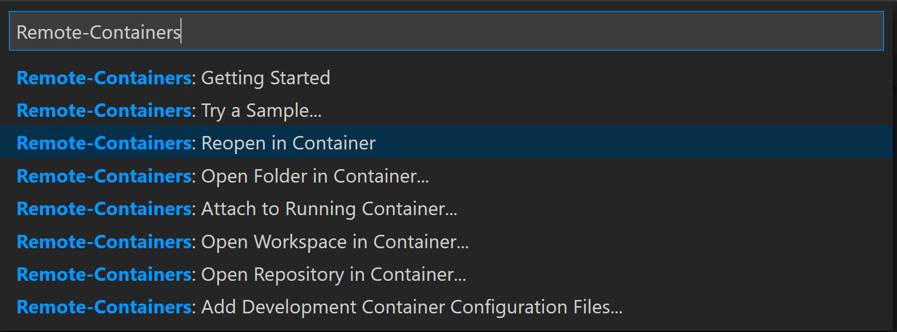
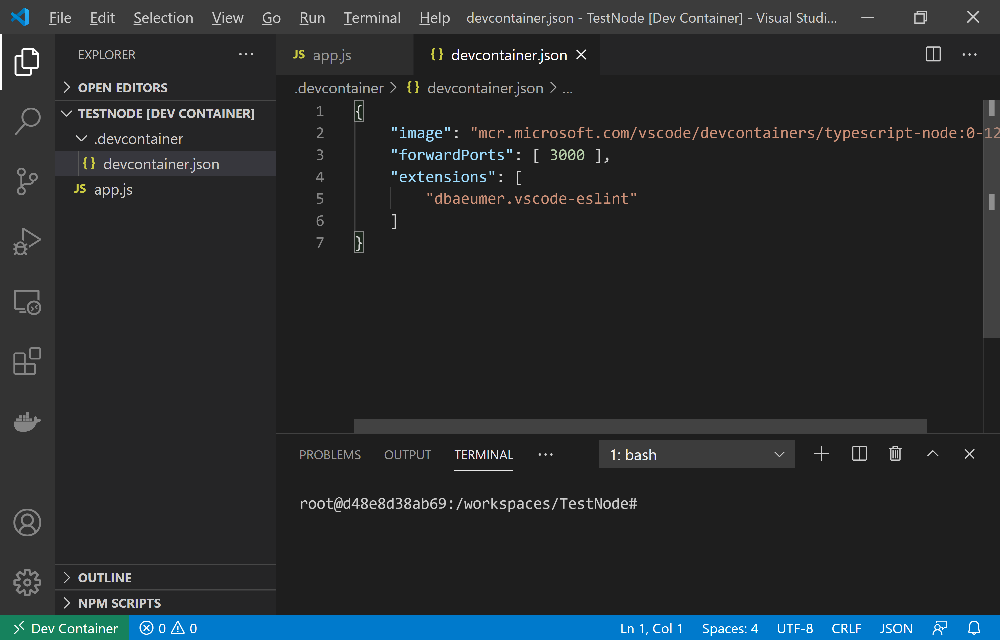
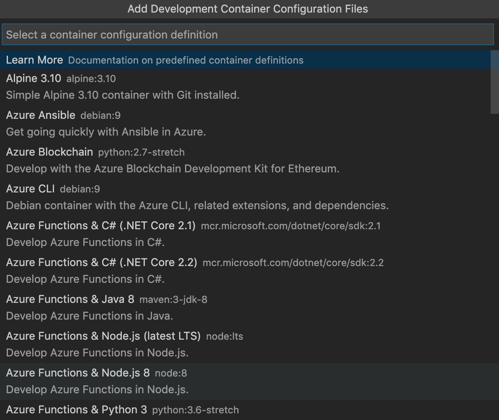
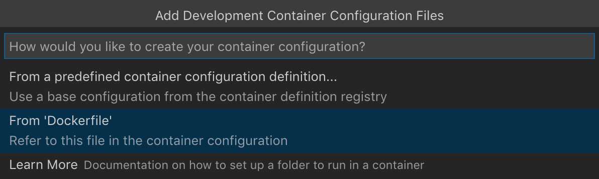
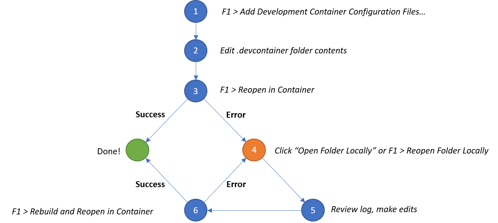
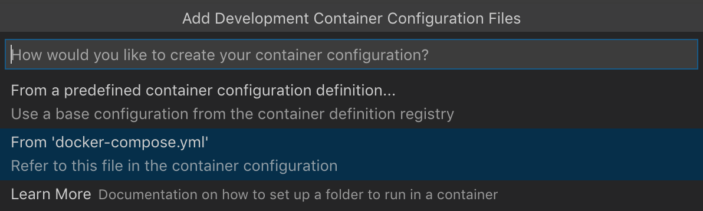
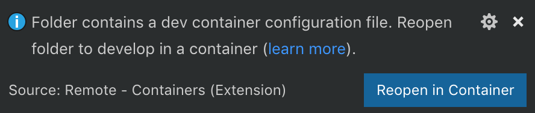
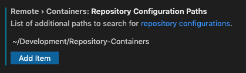

Create a development container
The Visual Studio Code Remote - Containers extension lets you use a Docker container as a full-featured development environment. It allows you to open any folder or repository inside a container and take advantage of Visual Studio Code's full feature set. A devcontainer.json file in your project tells VS Code how to access (or create) a development container with a well-defined tool and runtime stack. This container can be used to run an application or to separate tools, libraries, or runtimes needed for working with a codebase.
Path to creating a dev container
In this document, we'll go through the steps for creating a development (dev) container in VS Code:
- Create a
devcontainer.json, which describes how VS Code should start the container and what to do after it connects. - Make and persist changes to the dev container, such as installation of new software, through use of a Dockerfile.
- Configure multiple containers through Docker Compose.
- As you make changes, build your dev container to ensure changes take effect.
After any of the steps above, you'll have a fully functioning dev container, and you can either continue to the next step of this tutorial to add more features, or stop and begin working in the dev environment you currently have.
Note: The Remote - Containers extension has a Remote-Containers: Add Development Container Configuration Files... command that lets you pick a pre-defined container configuration from a list. If you'd prefer to have a complete dev container immediately rather than building up the
devcontainer.jsonand Dockerfile step-by-step, you can skip ahead to Automate dev container creation.
Create a devcontainer.json file
VS Code's container configuration is stored in a devcontainer.json file. This file is similar to the launch.json file for debugging configurations, but is used for launching (or attaching to) your development container instead. The dev container configuration is either located under .devcontainer/devcontainer.json or stored as a .devcontainer.json file (note the dot-prefix) in the root of your project.
You can use an image as a starting point for your devcontainer.json. An image is like a mini-disk drive with various tools and an operating system pre-installed. You can pull images from a container registry, which is a collection of repositories that store images. Here is a simple example devcontainer.json that uses a pre-built TypeScript and Node.js VS Code Development Container image from the popular container registry Docker Hub:
{
"image": "mcr.microsoft.com/vscode/devcontainers/typescript-node:0-12"
}
You can alter your configuration to do things such as:
- Install additional tools such as Git in the container.
- Automatically install extensions.
- Forward or publish additional ports.
- Set runtime arguments.
- Reuse or extend your existing Docker Compose setup.
- Add more advanced container configurations.
For this example, if you'd like to install the ESLint extension into your container and automatically forward port 3000, your devcontainer.json would look like:
{
"image": "mcr.microsoft.com/vscode/devcontainers/typescript-node:0-12",
"extensions": [
"dbaeumer.vscode-eslint"
],
"forwardPorts": [ 3000 ]
}
With the above devcontainer.json, your dev container is functional, and you can connect to and start developing within it. Try it out with the Remote-Containers: Reopen in Container command:

After running this command, when VS Code restarts, you're now within a Node.js and TypeScript dev container with port 3000 forwarded and the ESLint extension installed. Once you're connected, notice the green remote indicator on the left of the Status bar to show you are connected to your dev container:

Additional dev container scenarios
Through a devcontainer.json file, you can:
- Spin up a stand-alone container to isolate your toolchain or speed up setup.
- Work with a container deployed application defined by an image, Dockerfile, or Docker Compose.
- Use Docker or Kubernetes from inside a dev container to build and deploy your app.
If devcontainer.json's supported workflows do not meet your needs, you can also attach to an already running container instead.
Tip: Want to use a remote Docker host? See the Advanced Containers article for details on setup.
Install additional software
You may want to install additional software in your dev container. Once VS Code is connected to the container, you can open a VS Code terminal and execute any command against the OS inside the container. This allows you to install new command-line utilities and spin up databases or application services from inside the Linux container.
Most container images are based on Debian or Ubuntu, where the apt or apt-get command is used to install new packages. You can learn more about the command in Ubuntu's documentation. Alpine images include a similar apk command while CentOS / RHEL / Oracle SE / Fedora images use yum or more recently dnf.
Documentation for the software you want to install will usually provide specific instructions, but you may not need to prefix commands with sudo if you are running as root in the container.
For example:
# If running as root
apt-get update
apt-get install <package>
If you are running as root, you can install software as long as sudo is configured in your container. All predefined containers have sudo set up, but the Advanced Container Configuration article can help you set this up for your own containers. Regardless, if you install and configure sudo, you'll be able to use it when running as any user including root.
# If sudo is installed and configured
sudo apt-get update
sudo apt-get install <package>
Let's say you want to install Git. You could run the following commands in the integrated terminal in VS Code:
# If sudo is installed and configured
sudo apt-get update
# Install Git
sudo apt-get install git
Rebuild
When editing the contents of the .devcontainer folder, you'll need to rebuild for changes to take effect. Use the Remote-Containers: Rebuild Container command for your container to update.
However, if you rebuild the container, you will have to reinstall anything you've installed manually. To avoid this problem, you can use the postCreateCommand property in devcontainer.json.
The postCreateCommand is run once the container is running, so you can also use the property to run commands like npm install or to execute a shell script in your source tree (if you have mounted it).
"postCreateCommand": "bash scripts/install-dev-tools.sh"
You can also use an interactive bash shell so that your .bashrc is picked up, automatically customizing your shell for your environment:
"postCreateCommand": "bash -i scripts/install-dev-tools.sh"
Tools like NVM won't work without using -i to put the shell in interactive mode:
"postCreateCommand": "bash -i -c 'nvm install --lts'"
The command needs to exit or the container won't start. For instance, if you add an application start to postCreateCommand, the command wouldn't exit.
There is also a postStartCommand that executes every time the container starts. The parameters behave exactly like postCreateCommand, but the commands execute on start rather than create.
Rather than referencing an image directly in devcontainer.json or installing software via the postCreateCommand or postStartCommand, an even more efficient practice is to use a Dockerfile.
Dockerfile
A Dockerfile will also live in the .devcontainer folder. You can replace the image property in devcontainer.json with dockerFile:
{
"build": { "dockerfile": "Dockerfile" },
"extensions": [
"dbaeumer.vscode-eslint"
],
"forwardPorts": [ 3000 ]
}
When you make changes like installing new software, changes made in the Dockerfile will persist even upon a rebuild of the dev container.
In your Dockerfile, use FROM to designate the image, and the RUN instruction to install any software. You can use && to string together multiple commands.
FROM mcr.microsoft.com/vscode/devcontainers/typescript-node:0-12
RUN apt-get update && export DEBIAN_FRONTEND=noninteractive \
&& apt-get install git
Note: The
DEBIAN_FRONTENDexport avoids warnings when you go on to work with your container.
Automate dev container creation
Rather than creating a .devcontainer by hand, selecting the Remote-Containers: Add Development Container Configuration Files... command from the Command Palette (kbstyle(F1)) will add the needed files to your project as a starting point, which you can further customize for your needs.
The command lets you pick a pre-defined container configuration from a list based on your folder's contents:

All of the predefined container configurations you can pick from come from the vscode-dev-containers repository, which has examples of devcontainer.json and Dockerfiles for different scenarios.
You can also reuse an existing Dockerfile:

Now that you have a devcontainer.json and Dockerfile, let's see the general process for editing container configuration files.
Full configuration edit loop
Editing your container configuration is easy. Since rebuilding a container will "reset" the container to its starting contents (with the exception of your local source code), VS Code does not automatically rebuild if you edit a container configuration file (devcontainer.json, Dockerfile, and docker-compose.yml). Instead, there are several commands that can be used to make editing your configuration easier.
Here is the typical edit loop using these commands:

- Start with Remote-Containers: Add Development Container Configuration Files... in the Command Palette (
kbstyle(F1)). - Edit the contents of the
.devcontainerfolder as required. - Try it with Remote-Containers: Reopen in Container.
- If you see an error, select Open Folder Locally in the dialog that appears.
- After the window reloads, a copy of the build log will appear in the console so you can investigate the problem. Edit the contents of the
.devcontainerfolder as required. (You can also use the Remote-Containers: Open Log File... command to see the log again if you close it.) - Run Remote-Containers: Rebuild and Reopen in Container and jump to step 4 if needed.
If you already have a successful build, you can still edit the contents of the .devcontainer folder as required when connected to the container and then select Remote-Containers: Rebuild Container in the Command Palette (kbstyle(F1)) so the changes take effect.
You can also iterate on your container when using the Remote-Containers: Clone Repository in Container Volume command.
- Start with Remote-Containers: Clone Repository in Container Volume in the Command Palette (
kbstyle(F1)). If the repository you enter does not have adevcontainer.jsonin it, you'll be asked to select a starting point. - Edit the contents of the
.devcontainerfolder as required. - Try it with Remote-Containers: Rebuild Container.
- If you see an error, select Open in Recovery Container in the dialog that appears.
- Edit the contents of the
.devcontainerfolder as required in this "recovery container." - Use Remote-Containers: Reopen in Container and jump to step 4 if you still hit problems.
Use Docker Compose
In some cases, a single container environment isn't sufficient. Let's say you'd like to add another complex component to your configuration, like a database. You could attempt to add it to the Dockerfile directly, or you could add it through an additional container. Fortunately, Remote - Containers supports Docker Compose managed multi-container configurations.
You can either:
- Work with a service defined in an existing, unmodified
docker-compose.yml. - Create a new
docker-compose.yml(or make a copy of an existing one) that you use to develop a service. - Extend your existing Docker Compose configuration to develop the service.
- Use separate VS Code windows to work with multiple Docker Compose-defined services at once.
Note: When using Alpine Linux containers, some extensions may not work due to
glibcdependencies in native code inside the extension.
VS Code can be configured to automatically start any needed containers for a particular service in a Docker Compose file. If you've already started the configured containers using the command line, VS Code will attach to the running service you've specified instead. This gives your multi-container workflow the same quick setup advantages described for the Docker image and Dockerfile workflows above, while still allowing you to use the command line if you prefer.
To get started quickly, open the folder you want to work with in VS Code and run the Remote-Containers: Add Development Container Configuration Files... command in the Command Palette (kbstyle(F1)).

You'll be asked to either select an existing Docker Compose file (if one exists), or pick a pre-defined container configuration from the vscode-dev-containers repository in a filterable list sorted based on your folder's contents. Many of these "dev container definitions" use a Dockerfile, so select one of the following definitions as a starting point for Docker Compose:
After you make your selection, VS Code will add the appropriate .devcontainer/devcontainer.json (or .devcontainer.json) file to the folder.
You can also create your configuration manually. To reuse a Docker Compose file unmodified, you can use the dockerComposeFile and service properties in .devcontainer/devcontainer.json.
For example:
{
"name": "[Optional] Your project name here",
"dockerComposeFile": "../docker-compose.yml",
"service": "the-name-of-the-service-you-want-to-work-with-in-vscode",
"workspaceFolder": "/default/workspace/path/in/container/to/open",
"shutdownAction": "stopCompose"
}
See the devcontainer.json reference for information other available properties such as the workspaceFolder and shutdownAction.
Once you have added a .devcontainer/devcontainer.json file to your folder, run the Remote-Containers: Reopen in Container command (or Remote-Containers: Open Folder in Container... if you are not yet in a container) from the Command Palette (kbstyle(F1)).
If the containers are not already running, VS Code will call docker-compose -f ../docker-compose.yml up in this example. The service property indicates which service in your Docker Compose file VS Code should connect to, not which service should be started. If you started them by hand, VS Code will attach to the service you specified.
You can also create a development copy of your Docker Compose file. For example, if you had .devcontainer/docker-compose.devcontainer.yml, you would just change the following line in devcontainer.json:
"dockerComposeFile": "docker-compose.devcontainer.yml"
However, a better approach is often to avoid making a copy of your Docker Compose file by extending it with another one. We'll cover extend a Docker Compose file in the next section.
To avoid having the container shut down if the default container command fails or exits, you can modify your Docker Compose file for the service you have specified in devcontainer.json as follows:
# Overrides default command so things don't shut down after the process ends.
command: /bin/sh -c "while sleep 1000; do :; done"
If you have not done so already, you can "bind" mount your local source code into the container using the volumes list in your Docker Compose file.
For example:
volumes:
# Mounts the project folder to '/workspace'. The target path inside the container
# should match what your application expects. In this case, the compose file is
# in a sub-folder, so you will mount '..'. You would then reference this path as the
# 'workspaceFolder' in '.devcontainer/devcontainer.json' so VS Code starts here.
- ..:/workspace:cached
However, on Linux you may need to set up and specify a non-root user when using a bind mount or any files you create will be root. See Adding a non-root user to your dev container for details. To have VS Code run as a different user, add this to devcontainer.json:
"remoteUser": "your-user-name-here"
If you want all processes to run as a different user, add this to the appropriate service in your Docker Compose file:
user: your-user-name-here
If you aren't creating a custom Dockerfile for development, you may want to install additional developer tools such as curl inside the service's container. While less efficient than adding these tools to the container image, you can also use the postCreateCommand property for this purpose.
See install additional software for more information on installing software and the devcontainer.json reference for more information about the postCreateCommand property.
If your application was built using C++, Go, or Rust, or another language that uses a ptrace-based debugger, you will also need to add the following settings to your Docker Compose file:
# Required for ptrace-based debuggers like C++, Go, and Rust
cap_add:
- SYS_PTRACE
security_opt:
- seccomp:unconfined
After you create your container for the first time, you will need to run the Remote-Containers: Rebuild Container command for updates to devcontainer.json, your Docker Compose files, or related Dockerfiles to take effect.
Using localhost in Docker Compose
You can add other services to your docker-compose.yml file as described in Docker's documentation. However, if you want anything running in this service to be available in the container on localhost, or want to forward the service locally, be sure to add this line to the service config:
# Runs the service on the same network as the database container, allows "forwardPorts" in devcontainer.json function.
network_mode: service:db
You can see an example of network_mode: service:db in the Node.js and Mongo DB example dev container.
Extend your Docker Compose file for development
Referencing an existing deployment / non-development focused docker-compose.yml has some potential downsides.
For example:
- Docker Compose will shut down a container if its entry point shuts down. This is problematic for situations where you are debugging and need to restart your app on a repeated basis.
- You also may not be mapping the local filesystem into the container or exposing ports to other resources like databases you want to access.
- You may want to copy the contents of your local
.sshfolder into the container or set the ptrace options described above in Use Docker Compose.
You can solve these and other issues like them by extending your entire Docker Compose configuration with multiple docker-compose.yml files that override or supplement your primary one.
For example, consider this additional .devcontainer/docker-compose.extend.yml file:
version: '3'
services:
your-service-name-here:
volumes:
# Mounts the project folder to '/workspace'. While this file is in .devcontainer,
# mounts are relative to the first file in the list, which is a level up.
- .:/workspace:cached
# [Optional] Required for ptrace-based debuggers like C++, Go, and Rust
cap_add:
- SYS_PTRACE
security_opt:
- seccomp:unconfined
# Overrides default command so things don't shut down after the process ends.
command: /bin/sh -c "while sleep 1000; do :; done"
This same file can provide additional settings, such as port mappings, as needed. To use it, reference your original docker-compose.yml file in addition to .devcontainer/devcontainer.extend.yml in a specific order:
{
"name": "[Optional] Your project name here",
// The order of the files is important since later files override previous ones
"dockerComposeFile": [
"../docker-compose.yml",
"docker-compose.extend.yml"
],
"service": "your-service-name-here",
"workspaceFolder": "/workspace",
"shutdownAction": "stopCompose"
}
VS Code will then automatically use both files when starting up any containers. You can also start them yourself from the command line as follows:
docker-compose -f docker-compose.yml -f .devcontainer/docker-compose.extend.yml up
While the postCreateCommand property allows you to install additional tools inside your container, in some cases you may want to have a specific Dockerfile for development. You can also use this same approach to reference a custom Dockerfile specifically for development without modifying your existing Docker Compose file. For example, you can update .devcontainer/devcontainer.extend.yml as follows:
version: '3'
services:
your-service-name-here:
# Note that the path of the Dockerfile and context is relative to the *primary*
# docker-compose.yml file (the first in the devcontainer.json "dockerComposeFile"
# array). The sample below assumes your primary file is in the root of your project.
build:
context: .
dockerfile: .devcontainer/Dockerfile
volumes:
- .:/workspace:cached
command: /bin/sh -c "while sleep 1000; do :; done"
For example:
{
"name": "[Optional] Your project name here",
"dockerComposeFile": "../docker-compose.yml",
"service": "the-name-of-the-service-you-want-to-work-with-in-vscode",
"workspaceFolder": "/default/workspace/path/in/container/to/open",
"shutdownAction": "stopCompose"
}
Once you have added a .devcontainer/devcontainer.json file to your folder, run the Remote-Containers: Reopen in Container command (or Remote-Containers: Open Folder in Container... if you are not yet in a container) from the Command Palette (kbstyle(F1)).
Docker Compose dev container definitions
The following are dev container definitions that use Docker Compose:
- Existing Docker Compose - Includes a set of files that you can drop into an existing project that will reuse a
docker-compose.ymlfile in the root of your project. - Node.js & MongoDB - A Node.js container that connects to a Mongo DB in a different container.
- Python & PostgreSQL - A Python container that connects to PostGreSQL in a different container.
- Docker-from-Docker Compose - Includes the Docker CLI and illustrates how you can use it to access your local Docker install from inside a dev container by volume mounting the Docker Unix socket.
Congratulations! You've now configured a dev container in Visual Studio Code. Continue reading to learn how to share container configurations among teammates and various projects.
Add configuration files to a repository
You can easily share a customized dev container definition for your project by adding devcontainer.json files to source control. By including these files in your repository, anyone that opens a local copy of your repo in VS Code will be automatically prompted to reopen the folder in a container, provided they have the Remote - Containers extension installed.

Beyond the advantages of having your team use a consistent environment and tool-chain, this also makes it easier for new contributors or team members to be productive quickly. First-time contributors will require less guidance and hit fewer issues related to environment setup.
Alternative: Repository configuration folders
In some cases, you may want to create a configuration for a repository that you do not control or that you would prefer didn't have a configuration included in the repository itself. To handle this situation, you can configure a location on your local filesystem to store configuration files that will be picked up automatically based on the repository.
First, update the Remote > Containers: Repository Configuration Paths User setting with the local folder you want to use to store your repository container configuration files.
In the Settings editor:

Next, place your .devcontainer/devcontainer.json (and related files) in a sub folder that mirrors the remote location of the repository. For example, if you wanted to create a configuration for github.com/microsoft/vscode-dev-containers, you would create the following folder structure:
📁 github.com
📁 microsoft
📁 vscode-dev-containers
📁 .devcontainer
Once in place, the configuration will be automatically picked up when using any of the remote containers commands. Once in the container, you can also select Remote-Containers: Open Container Configuration File from the Command Palette (kbstyle(F1)) to open the related devcontainer.json file and make further edits.
Next steps
- Attach to a Running Container - Attach to an already running Docker container.
- Advanced Containers - Find solutions to advanced container scenarios.
- devcontainer.json reference - Review the
devcontainer.jsonschema.